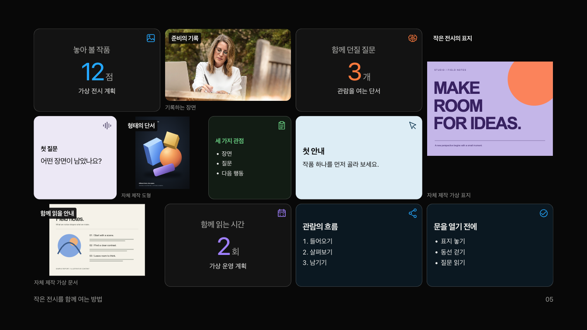

익숙한 미감으로,
다른 이야기를.
세로 사진과 넓은 스트립, 크기가 다른 타일, 색을 가진 아이콘을 다시 꺼내 쓰세요. 문장과 자료는 Markdown에 한 번만 작성하고, 같은 원고로 발표와 읽기 자료를 만듭니다.

사진·숫자·인용·목록 · H2가 자료의 경계
실제 발표에서 보기 ↗내용은 원고에, 선택은 짧게.
H2로 자료를 묶으면 혼합 타일을 만들고, 일반 목록으로 아이콘월을 만듭니다. 세로 사진과 스트립은 비율을 선택할 수 있으며, 사진별 초점도 지정할 수 있습니다.
혼합 타일의 기본 배치는 자료 수에 맞춰 달라집니다. 기존 12칸 배치는 seoul·recap 옵션으로 남겼습니다. 전시 준비의 12타일은 seoul 옵션으로 만들었습니다. 코드에서 variant를 생략한 bento는 수량에 맞추는 기본 배치입니다.
내장 아이콘은 목록과 icons 배열의 순서를 함께 맞춥니다. 내 이미지는 같은 목록 항목 안에서 이미지와 라벨을 함께 수정합니다. 읽기 화면에는 전체 원문과 원래 순서가 남습니다.
이 화면의 Markdown 원고 ↗<!-- stage-slide compose: bento --> <!-- stage-group tone: blue icon: image --> ## 남겨 둔 기록 **24** 개 ## 함께 읽을 원칙 > 관찰과 짐작을 구분합니다. … H2 자료를 더하면 배치도 바뀝니다.
자료 수를 바꾸어도
다른 내용으로 만든 수량별 실제 입력입니다. 빈 자료를 추가해 12칸을 채우지 않았습니다.